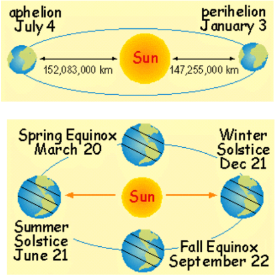
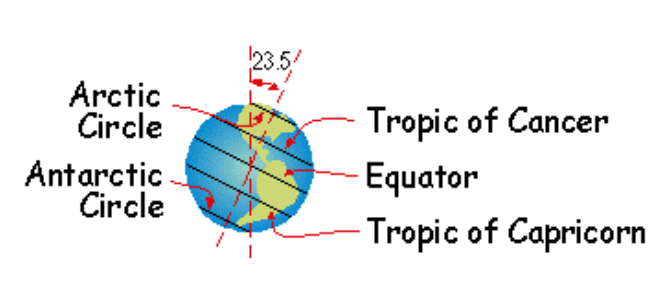
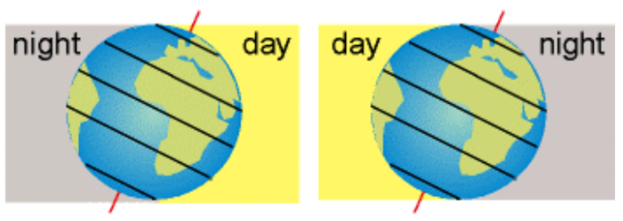

DEVELOPED BY ROBERT ZULU THE PROFESSIONAL PROGRAMMER
Weather and climate are the result of a complex series of interactions between all elements of the earth system (hydrosphere, atmosphere, biosphere, solid earth) but are largely controlled by the interaction between the Earth and Sun.
The distribution of solar radiation on Earth's surface regulates the order of the seasons and divides day and night.
The Northern Hemisphere receives more solar radiation in summer and less in winter. Surely,
there are few more basic scientific questions than: Why is it colder in winter than in summer?
(What is your answer?) Yet even graduating seniors at a prestigious eastern university were unable to answer the question correctly (almost all got it wrong).
The most common explanation given was that Earth was closer to the Sun in summer and further away in winter - unfortunately, the exact opposite is true.
Earth's orbit is a little uneven and the planet comes closest to the Sun during winter in the Northern Hemisphere (January 3) and is farthest away during Summer (July 4).
 Earth is farthest
from the Sun at its ahphelion and closest during its perihelion.
The Sun is overhead at the Tropic of Cancer on June 21
and at the Tropic of Capricom on December 21. It is overhead at
the spring and fall equinoxes.
The principal reason for the seasonal differences in climate around the globe is the tilt of Earth's axi. Earth rotates around an axis that is tilted 23.5 degrees to vertical. The Tropics of Cancer and Capricorn are located 23.5 degrees north and south of the equator, respectively. Insolation, the amount of solar radiation received by Earth, is greatest when the Sun is directly above a location on Earth and decreases as the angle of the Sun's rays becomes more oblique. The axial tilt places the Sun directly overhead at the Tropic of Cancer in the Northern Hemisphere during the summer solstice (June 21). Likewise, the Sun's rays strike the Northern Hemisphere more obliquely when the Sun lies over the Tropic of Cancer in the Southern Hemisphere during the winter solstice (December 21).
 Relative positions of the Equator and tropics. The Arctic and Antarctic Circles are located 66.5 degrees north and south of the equator (or 23.5 degrees south and north of the North and South Poles, respectively).
Day and night would each last exactly 12 hours everywhere on the globe if Earth's axis were vertical. In contrast, the hours of daylight change at each point in the Northern Hemisphere from a maximum during the summer solstice to a minimum on December 21 when the Sun is directly overhead at the Tropic of Capricorn. Day and night are split equally during the equinoxes. The length of each day increases traveling northward during summer in the Northern Hemisphere and decreases southward in the Southern Hemisphere. Perpetual daylight (24 hours) occurs at the North Pole, while the South Pole is in darkness. This pattern is reversed during the winter The tilt of Earth's axis results in 24-hour daylight at the North Pole and almost complete daylight north of the Arctic Circle during summer in the Northern Hemisphere (left) and perpetual darkness during winter (right). The situation is reversed south of the Antarctic Circle
External Energy and the Earth System A fraction of the Sun’s energy reaches the earth as solar radiation, the process by which heat passes through a gas, liquid, or vacuum. Most solar radiation reaching Earth is absorbed by the land or oceans. Air masses are warmed or cooled by the land or ocean below. Warm tropical air rises over the equatorial oceans. As the air rises it gradually cools and releases moisture as rain. Cooler air eventually sinks, returning to the surface to repeat the cyclical journey that represents convection, the movement within materials driven by different temperature conditions